Prototyped Mobile App Game Design 1
This was a group project in which we had to create a game related to Selkies. The two use cases we chose to develop further
were purchasing a card package in the store and the single player story mode. I volunteered to design the prototypes, as shown below.
[Course: User Experience; Created Via: Justinmind Prototyper Application]
 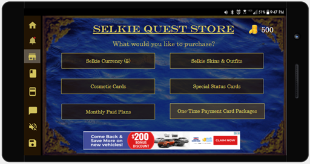
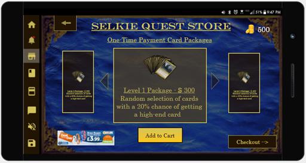
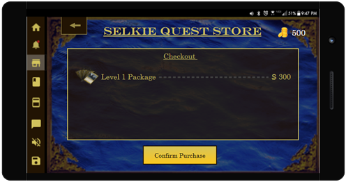
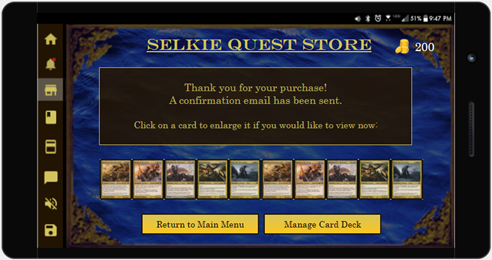
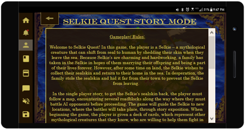
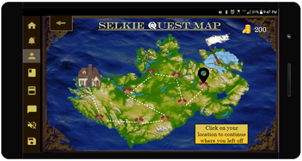
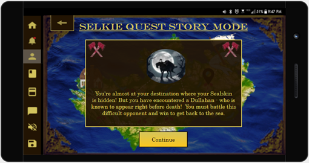
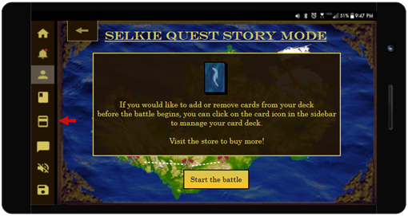
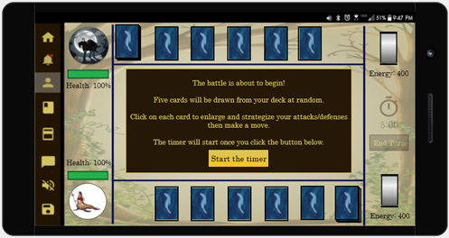
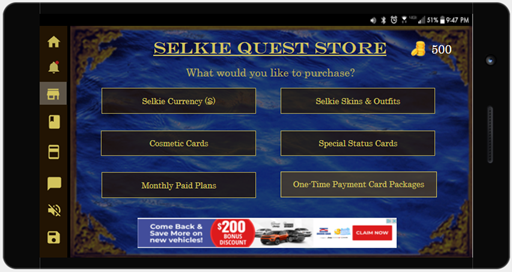
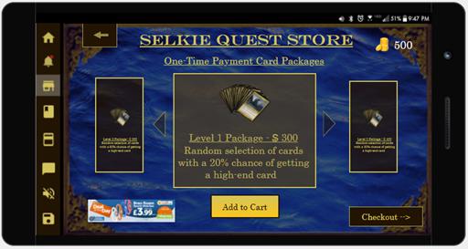
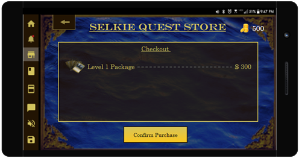
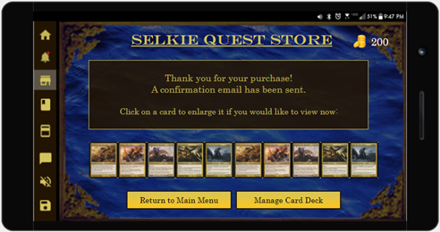
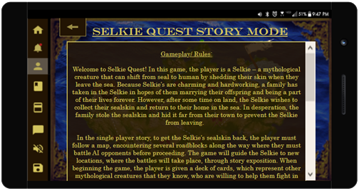
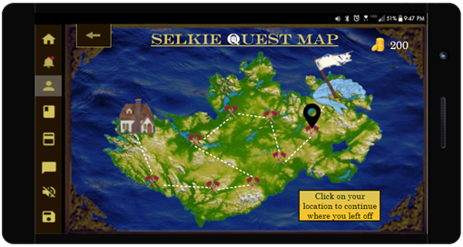
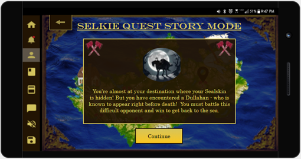
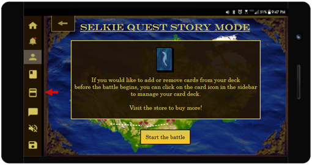
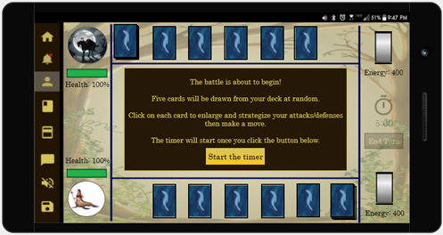
 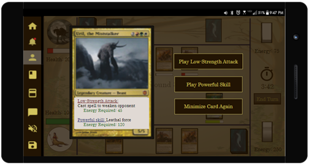
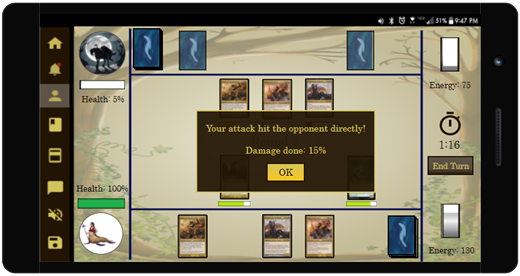
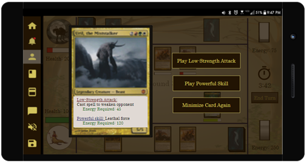
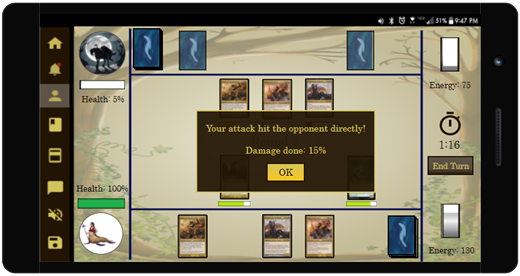

Prototyped Mobile App Game Design 2
This prototype was developed for the use case "take turns guessing the other player's target" in a telepathic game where
the loser's mind becomes heated and is blown up.
[Course: User Experience; Created Via: Justinmind Prototyper Application]
Prototyped Mobile App Design
My design for an application in which users can upload pictures of their clothes and put outfits together. The app will generate outfit
suggestions to remove the morning stress of trying to think of something new to wear.
[Course: User Experience; Created Via: Justinmind Prototyper Application]
 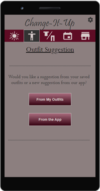
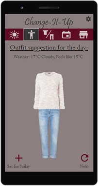
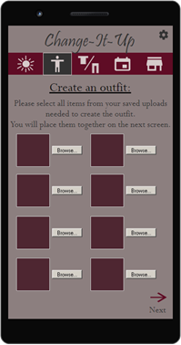
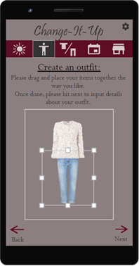
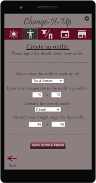
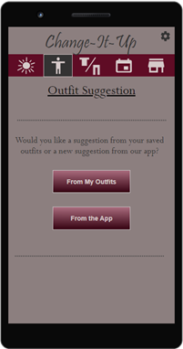
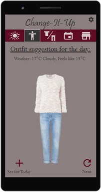
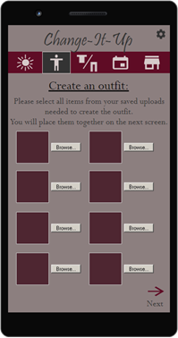
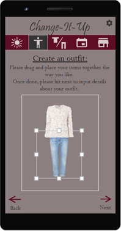
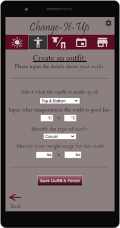
Graphic Illustrations for a Children's Book
This children's book was written and illustrated by me using the curvature pen tool, the brush tool, the grain effect/filter, gradients, etc.
[Course: Graphic Techniques for Illustration; Created Via: Adobe Illustrator]
 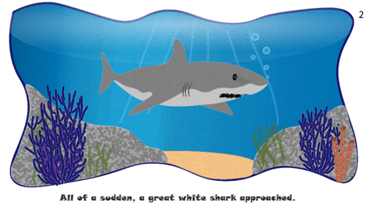
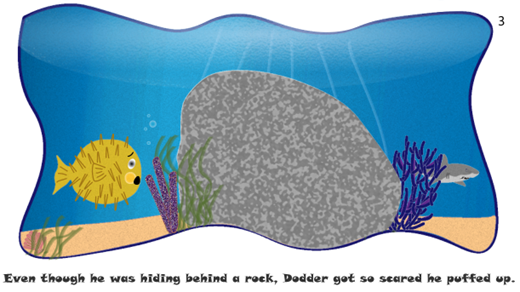
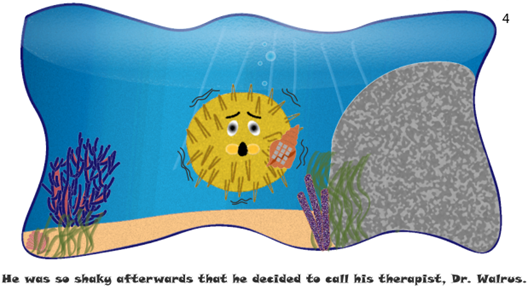
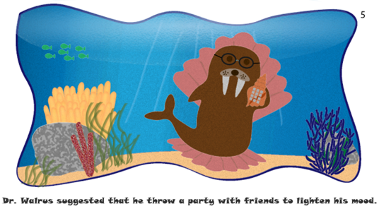
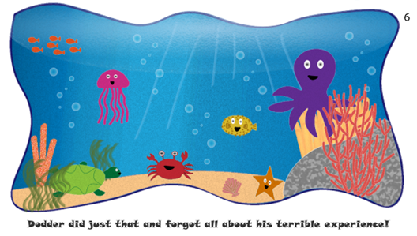
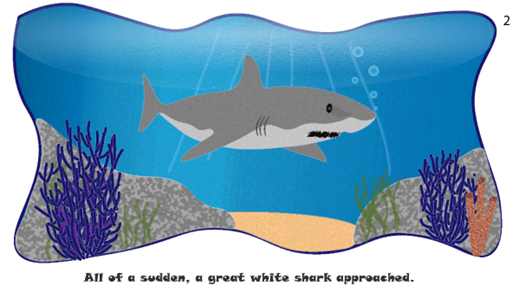
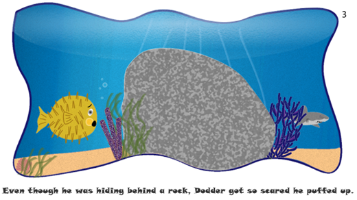
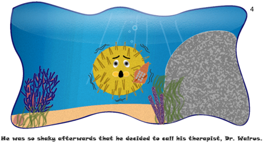
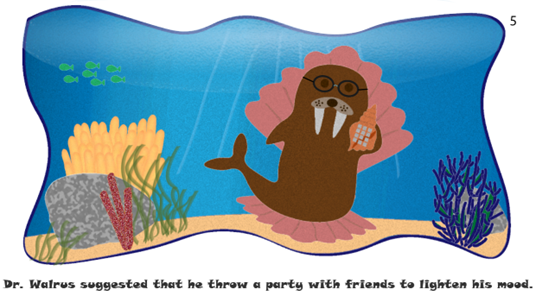
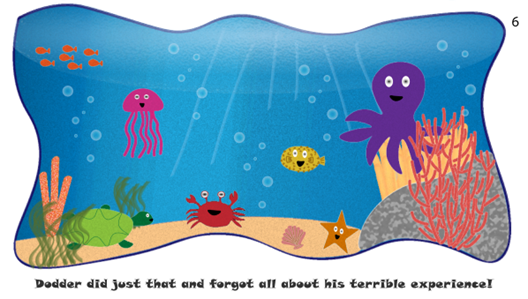
Website Advertisement
A website poster for a new type of hot chocolate (the theme given to us).
[Course: Graphic Techniques for Illustration; Created Via: Adobe Photoshop]
Business Advertisement
An advertisement to emphasize the service of hair colouring/dye at a salon, created with the image trace function in Illustrator.
[Course: Graphic Techniques for Illustration; Created Via: Adobe Illustrator]
Product/Brand Advertisement
A poster for a lipstick brand, utilizing the mosaic effect.
[Course: Graphic Techniques for Illustration; Created Via: Adobe Photoshop]
Graphic Illustration for Preserving the Ocean
An illustration created by me using the curvature pen tool, the image trace function on an Earth image, and a clipping mask.
[Course: Graphic Techniques for Illustration; Created Via: Adobe Illustrator & Photoshop]
Image Trace in Adobe Illustrator
This photo of an owl in the forest was image traced and recoloured in Illustrator to give this dark, enchanted/mystical abstract vibe.
[Course: Graphic Techniques for Illustration; Created Via: Adobe Illustrator]
Fansite
After being given the layout, I designed this fansite below which is also responsive.
[Course: Web Foundations; Created Via: Visual Studio Code]